VANSI (Visualização de Algoritmos de Análise Sintática) is an interactive educational tool for teaching and learning compiler parsing algorithms. Developed as a graduation thesis in Computer Science at the Universidade Federal do Ceará, Campus Quixadá.
Svelte
Supabase
The animations were implemented with Anime.JS and CSS transitions. The states are pre-calculated and then used to set the step of the execution as the controls are used.
1. Step-by-step visualization with animations
2. Interactive automata, parse trees, and parsing tables
3. Pseudocode with breakpoints
4. Grammar input and string analysis
5. Copy results to clipboard
There are already existing tools to teach parsers, but there a few gaps that could be filled, that's why VANSI was made.
One feature that sets VANSI apart from others parsers teaching tools is the pseudocode line hightlight and breakpoints. You can see the pseudocode execution in a floating window synchronized with the animations execution and even add breakpoints to the pseudocode lines.
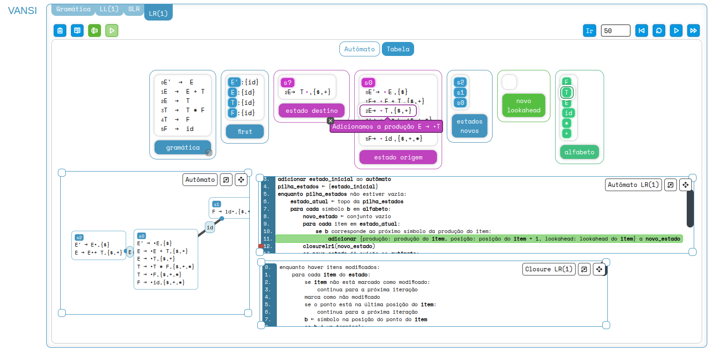
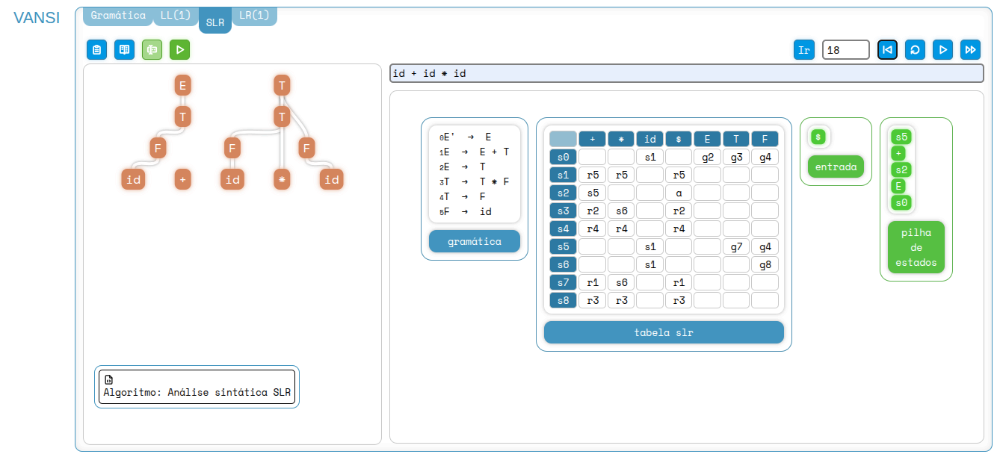
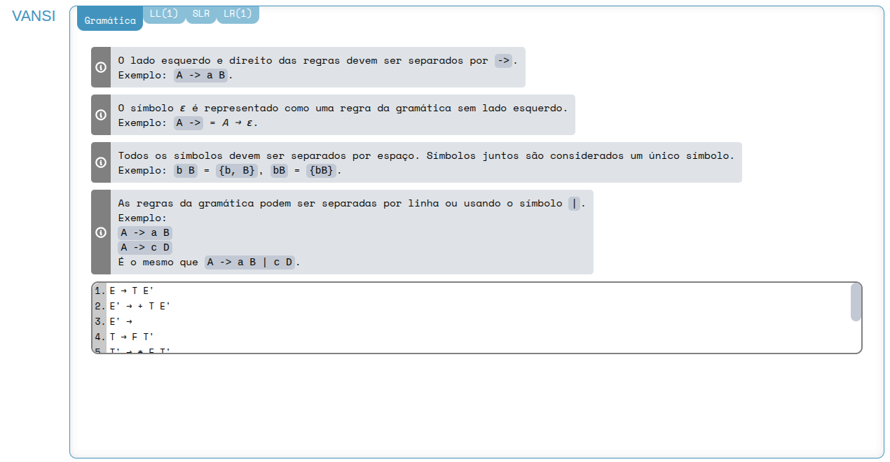
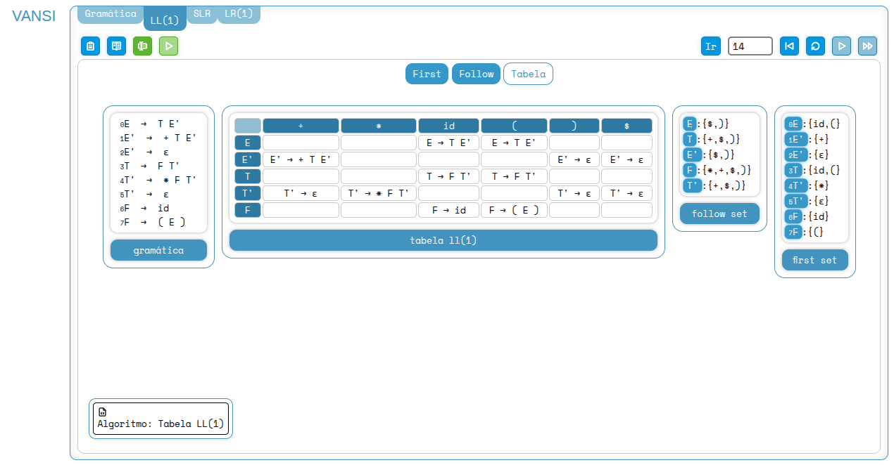
This is a frontend application for a product catalog and inventory management system. Built with Vue 3, TypeScript, and Vuetify, it provides an interactive admin dashboard for managing products, categories, and users with JWT-based authentication.
Vue
Vuetify
TypeScript
Java
SprinBoot
id: Long
name: String, required
description: String
price: Double, required, >0
quantity: Integer, required,
≥0
category: Category, nullable
image: byte[ ], nullable
id: Long
name: String, required, unique
description: String
products: List
id: Long
username: String, required
email: String, required
password: String, required
Create, read, update, delete products with name, description, price, quantity, category, and image
Organize products into categories with full CRUD operations
Register and login with JWT tokens
Upload and retrieve product images via multipart file requests
Paginated listing with optional name filtering for products, categories, and users
Jakarta Bean Validation with custom error responses
Frontend input validation is done with Vuetify's field component.
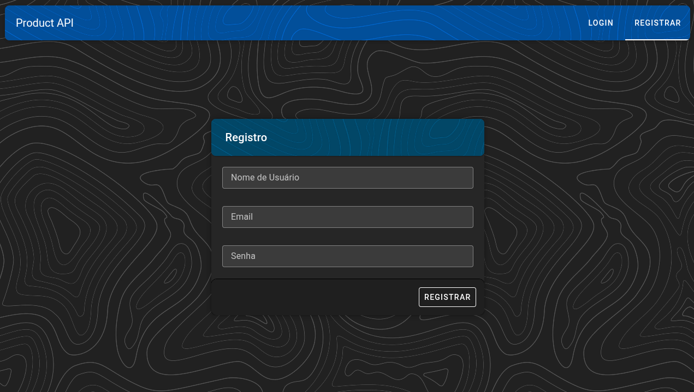
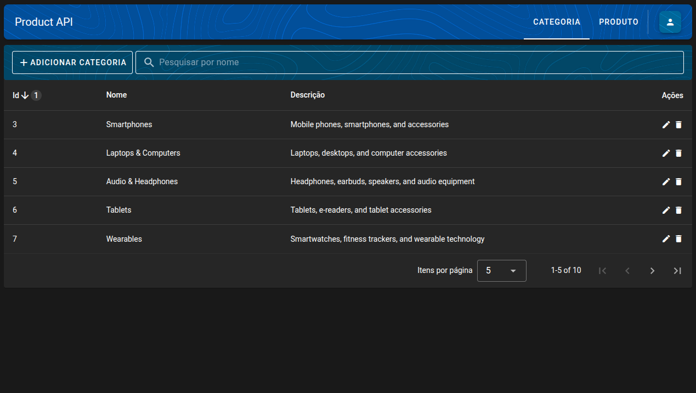
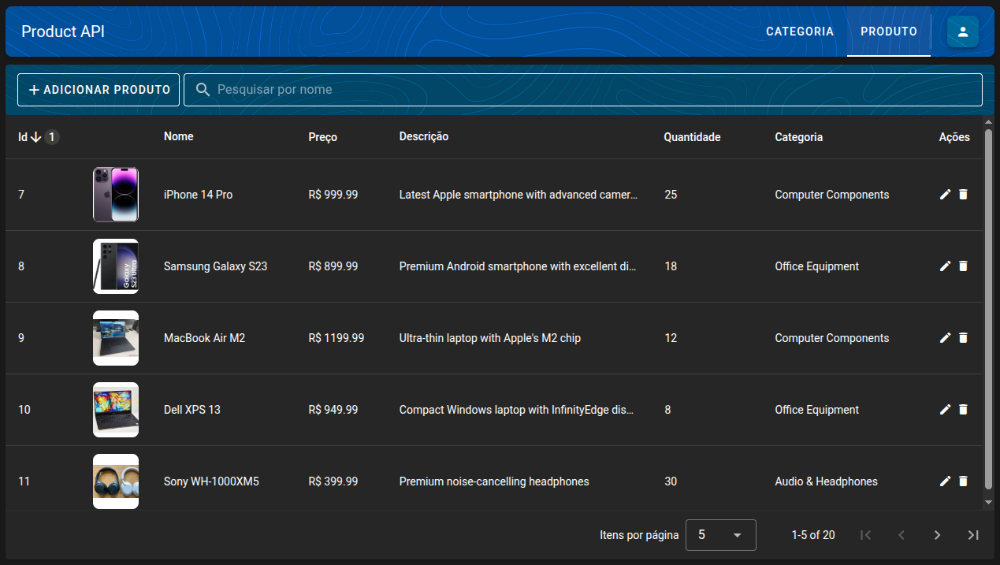
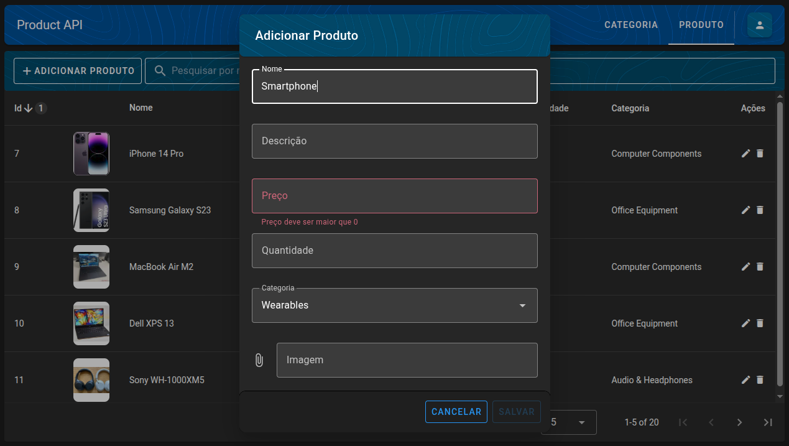
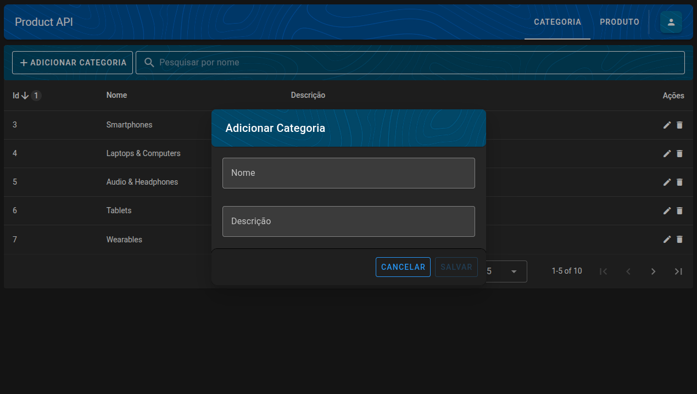
This is an application showcasing a few path-finding algorithms. It was built with SFML as an AI fundamentals course's project with the objective of testing the algorithms speed.
C++
SFML
A*
Dijkstra
Breadth-First Search
Depth-First Search
Greedy
Automatically generate random inputs
Execute an animation for an input with the selected algorithm
Generate logs with important information like speed and grid size
5 Pre-programmed experiments to be executed
Have multiple executions at a time given a list of inputs file
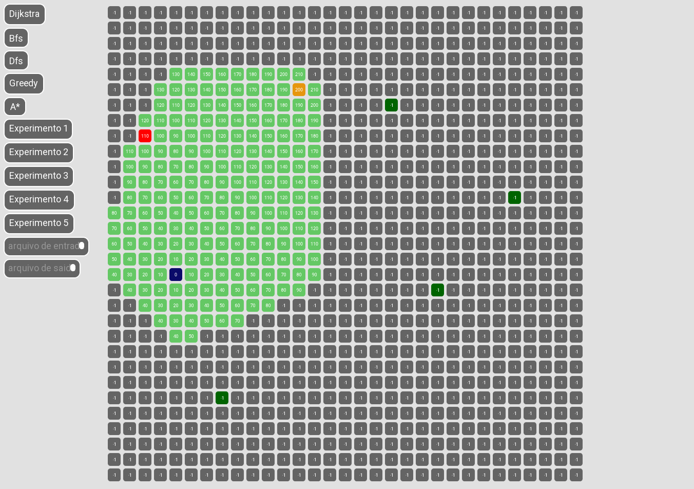
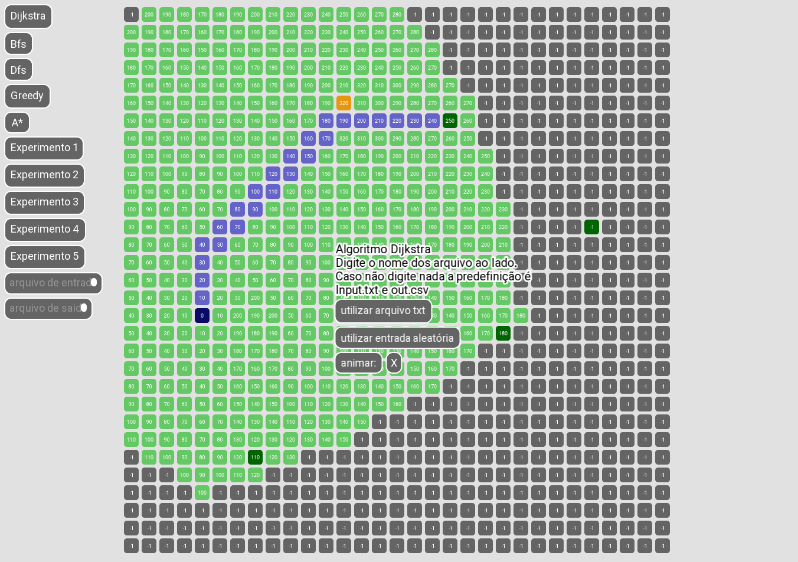
This application was made for a computer graphics course's project. It was built with OpenGL and is capable of basic operations on 3D models like 3D transform and camera control with a basic user interface powered by the library Dear ImGui.
C++
OpenGL
Dear ImGui
Assimp
Load 3D models of various 3D file formats
Apply textures to the models from a predefined set of textures
Use the camera in Orthographic or Perspective mode
Apply translate, rotate and scale to the models